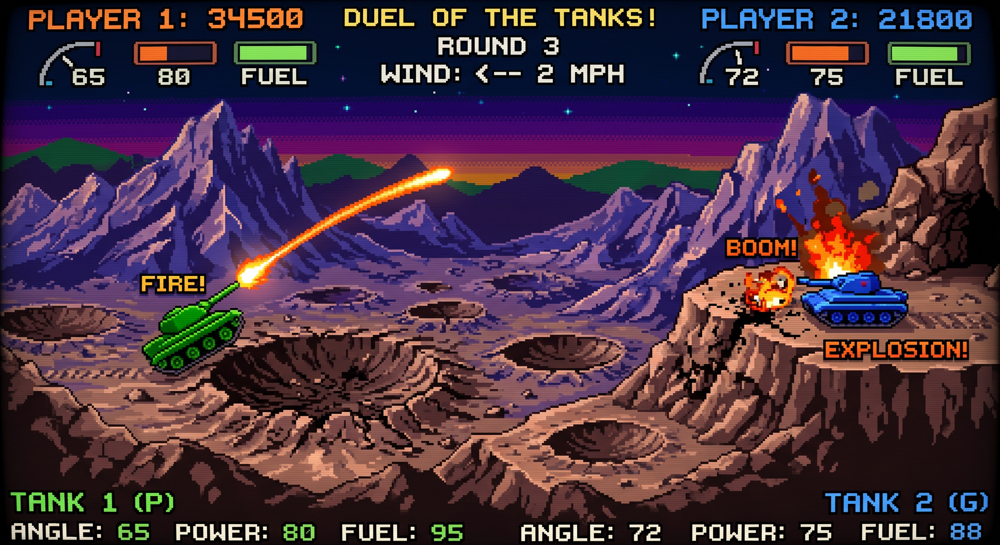
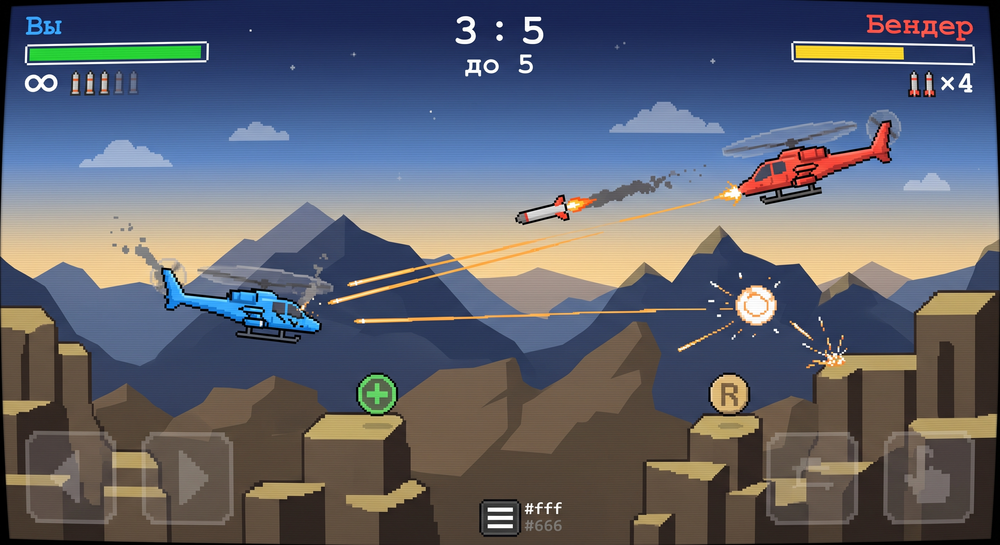
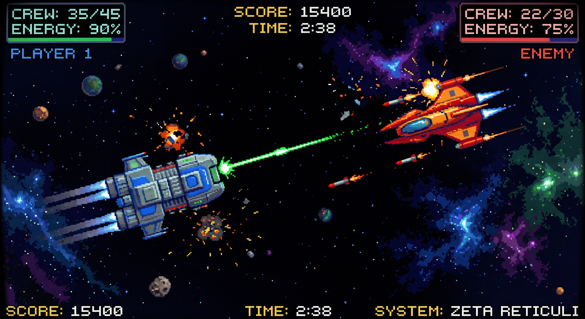
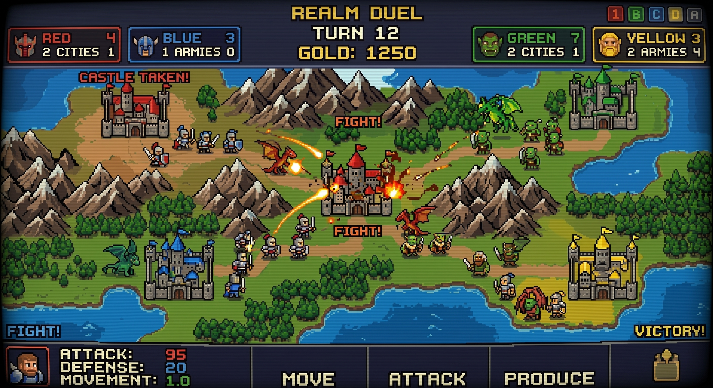

по мотивам DOS-классики начала 90-х

Артиллерийская дуэль в духе Scorched Earth: угол, сила, ветер — и разрушаемая земля.
▶ ИГРАТЬ
Вертолётная дуэль в духе игры 1993 года: пулемёт, ракеты, скалы и посадка на перезарядку.
▶ ИГРАТЬ
Дуэль космических кораблей по мотивам Star Control: гравитация, инерция и уникальные способности флота.
▶ ИГРАТЬ
Пошаговая стратегия по мотивам Warlords: захватывайте города, стройте армии, водите героев по руинам за артефактами. Туман войны скрывает врага.
▶ ИГРАТЬ